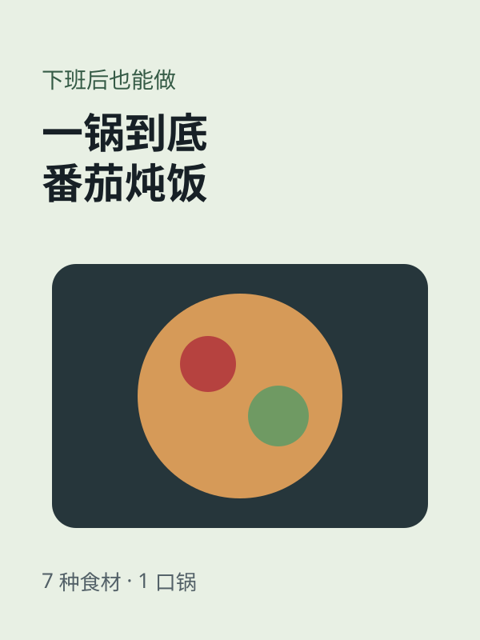
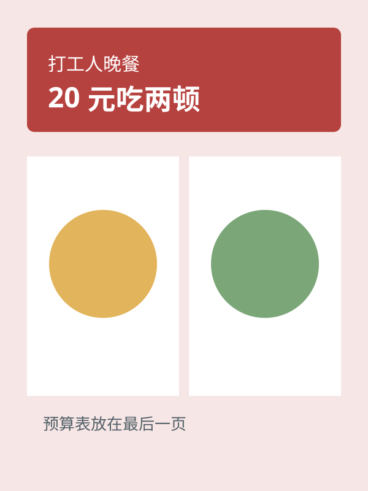
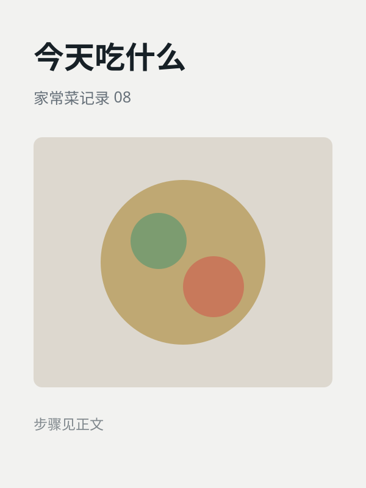

XIAOHONGSHU ACCOUNT INTELLIGENCE · 2026-08-27
它靠 明确的下班场景，持续 复用时间承诺与步骤清单，从而 形成稳定的效率做饭识别。
这是一个仅用于展示报告结构的虚构账号。它把每篇内容都压缩成可验证的时间、预算和步骤，用户无需先认识创作者，也能立即判断内容是否值得保存。
结论：从记录菜谱转向解决下班后时间与预算问题，是可见样本中的关键变化。
最关键转折：首次把“下班后”写进标题并用时间顺序兑现，账号才从个人记录变为稳定解决方案。
结论：定位、选题和内容价值已形成闭环，下一步不是扩人群，而是增加同一结构里的信息增量。
结论：爆款可以重复，重复后数据会波动。这个示例复用的是“下班限制条件 + 完整成品 + 可执行清单”，而不是同一张封面。



人群、结果、时间和成品证据同时成立，正文再用顺序清单兑现。
只有泛场景和成品，没有对象、限制或新增信息，用户难以预判收益。
| 样本 | 日期 | 重复元素 | 变化元素 | 公开互动 | 判定 |
|---|---|---|---|---|---|
| 三菜一汤 45 分钟 | 2026-05-08 | 时间承诺、完整成品 | 三道新菜与顺序 | 高热基准 | 首个高热 |
| 一锅到底炖饭 | 2026-05-19 | 下班场景、数字标题 | 烹饪工具 | 相对高热 | 有效复用 |
| 20 元吃两顿 | 2026-06-02 | 限制条件、成品证据 | 预算表 | 中高段 | 结构迭代 |
| 今天吃什么 | 2026-06-12 | 成品图 | 缺少明确限制 | 低段 | 低效样本 |
| 30 分钟备餐 | 2026-06-20 | 时间承诺、步骤 | 两日份结果 | 中段 | 可继续验证 |
只保留与本账号直接相关的风险，不把规范全文搬进报告。
时间与预算需要展示口径，不能把个例写成人人保证。
隔夜、保存与加热建议需要注明条件和边界。
品牌与食材合作需要按当期规则清晰标识。
菜谱、图片和音乐使用原创或已获授权素材。
迁移公式：固定人群与需求 × 可持续拍摄场景 × 可重复内容结构 × 每篇新信息
值得迁移的是把内容变成具体场景下的解决方案，以及用结果物兑现承诺。
先固定人群、拍摄位置、封面信息层级和正文步骤，再扩菜系。
必做：定义 3 个支柱与固定视觉结构。
保持：人群、场景和主承诺。
必做：每次只改时间或预算一个变量。
进阶：同一结构多篇高于自身中位水平。
必做：增加合集、替代方案和备餐流程。
进阶：评论持续提出同类下一步需求。
建议配比：50% 核心效率晚餐 / 25% 预算挑战 / 25% 食材替代与复盘。
采集日期、证据类型、缺失字段和规则来源都在这里交代清楚。
采集日期：2026-08-27
数据类型：全部为虚构演示数据
未获取字段：真实账号、真实互动、真实评论与后台数据
小红书账号拆解与内容策略
扫码联系，请在公开发布前确认二维码属于项目维护者。